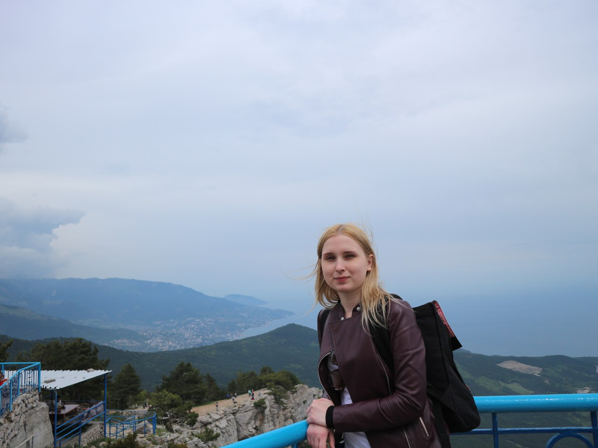

Anastasia Chernysheva
Hi guys!
This is my Page on Github
That`s me

Look at my photo if you want to get the idea of my appearance
Information: I`m a student of the Higher School of Economic and I`m being proud of it. I hate informatics with all my heart (cause I`m really bad at it and I cannot change the situation). However I`m sure that IT is the most perspective sci-field today, plus Bill Ghates - the founder of Microsoft is the iconic figure for me - I really appreciate him, his projects and more than anything his super progressive ideas regarding politics, bissiness, education etc .
How you can contact with me? See the links below
My Page on VK https://vk.com/anchernyshyova
My Page on на GitHub https://github.com/aschernysheva
Phone number: +79254619981
E-mail: aschernysheva@edu.hse.ru